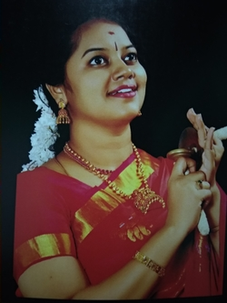
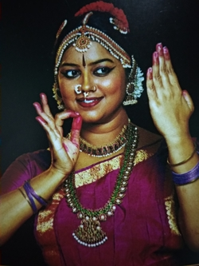

Smt.Aparna was a child prodigy with immense interest in Music and Bharatanatyam from her tender of age of 7.She received basic training for about 6 years in dance from Dr.Savitri,a renowned Musician & Dance Maestro and a privileged disciple of Sri.Needamangalam Krishnamurthy and was later given advanced training in Bharatnatyam for about 14 years under the tutelage of Dr.Smt.Saraswathi Sundaresan of vipanchee, Chennai, a trust founded by padma vibushan Dr.M.Balamurali Krishna.
Smt.Aparna's unquenching thirst for learning paved way for completion of her Double masters in both
Musicand Bhartanatyam from University of Madras While the advanced training was in progress and she became the first person to have triumphed this unique credit,an achivement scrcely found.She had also won the prestigious scholarship from Govt of india under the scheme of young artists in different cultural fields.
During her college days,she was the senior under officer and selected for Republic day contingent drill at New Delhi as a NCC cadet and bagged gold medal from the president of india.

Tradition & Creativity
Smt.Aparna assimilated the famous Pandanallur style and tradition.Her deftness in Abhinayam and Nrittha in accordance to bhavam,mastery over Tala/Korvais and her unceasing creativity adds glory to the tradition and kindles perpetual interest to rasikas.
As performer
Smt.Aparna is one of the prominent Danseuse credited with more than 1000 dance performances across India & Abroad which includes the famous Chidambaram Natyanjali,Music Academy,NaradaGanaSabha,Bhartiya Vidya Bhavan,Chennayil Thiruvayaru,Tanjavore Big Temple,Mahabalipuram Dance Festival,Kumbakonam Natyanjali,Sripuram Golden Temple-Vellore,Trivandrum Srivaragam, and Adyar Music College,notably to name a few. She has Represented Tamilnadu Dept. of Art & Culture at Tokyo.
Smt.Aparna is also accredited with her exceptional ability to sing and Perform nattuvangam simultaneously.
As Composer and Choreographer
Smt.Aparna quest for tamil Literatures facilitated her to compose and choreograph classic literatures like Thirukural, Natrinai, Kurunthogai,Muthollayiram, Kalmabakam,KutralaKuravanji, Azhagar Kuravanji and Bhakthi Literatures such as Tirupugazh,Thevaram,Pasurams,etc
Smt.Aparna own creation of Dance Ballet in Tamil featuring Ramayana,Bandasura Vadham and Thrisakthi ( Durga,Lakshmi,Saraswathi) stands testimony to her abundant creativity and resolute commitment.

Presentations
Smt.Aparna has so far given more than 25 presentations and lecture demonstrations covering various aspects of Dance and Music at prestigious platforms.Further she was invited by famous Media Channels like All India Radio, DD, Jaya TV,Vijay TV etc for anchoring and special performances.
As Guru
Smt.Aparna considers teaching and sharing of the divine art with earning disciples as much significant as her domain of performing career. Her ardent inclination to culture, Arts and Bhakthi sets her apart as a teacher of Bharatnatyam, Vocal music, Slokas and Hymns and inculcates the rich heritage of indian culture and value based learning thus ensuring continuity of the arts in the safe hands of future citizens.
Smt.Aparna is the founder and director of Jathiswaram
(Centre for art and culture) where in about 200 students are learning dance and music.. Further she is a visiting faculty at Vidya Vani, Salem Sakthi Kailash College, Salem.